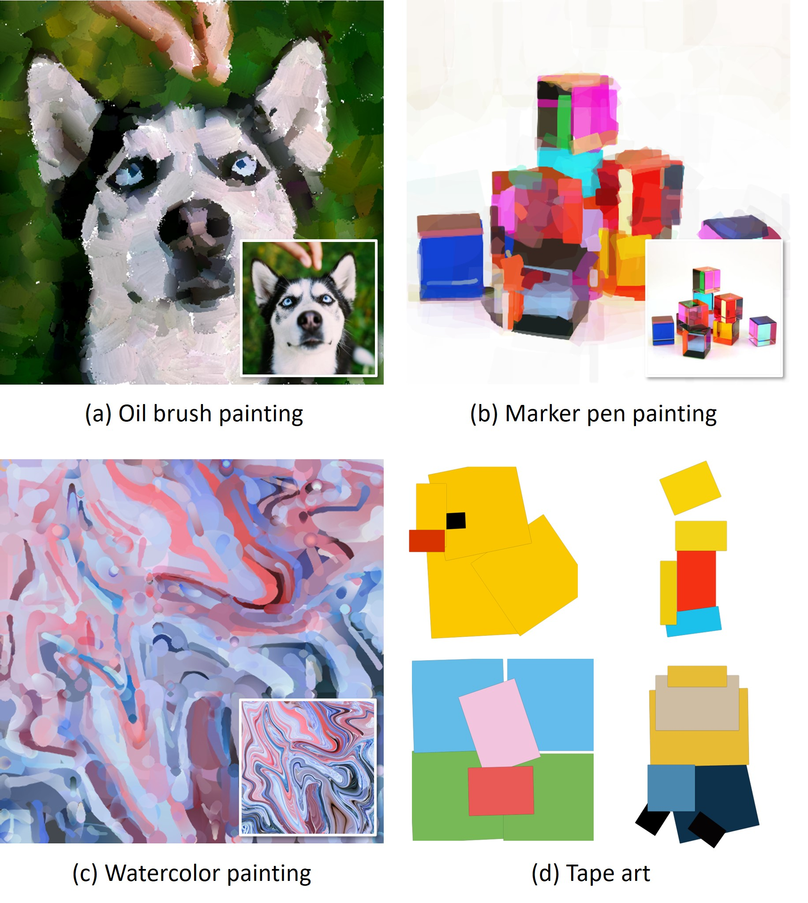
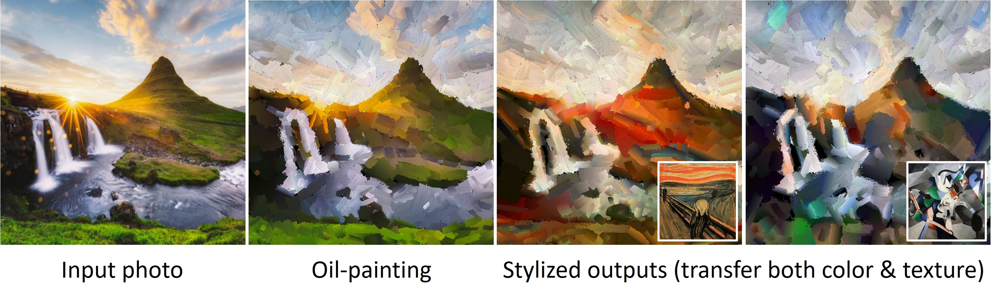
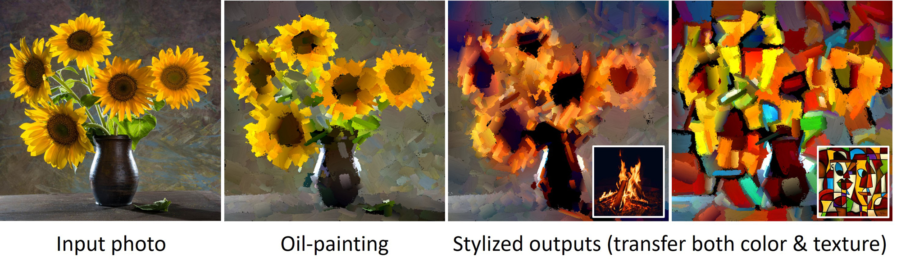
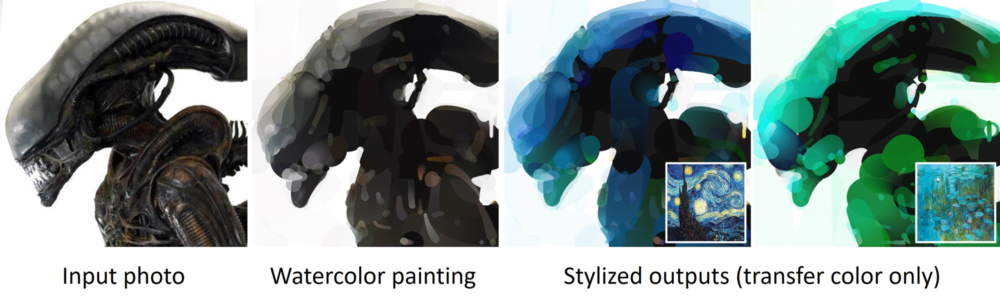
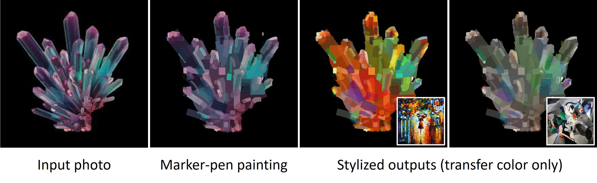
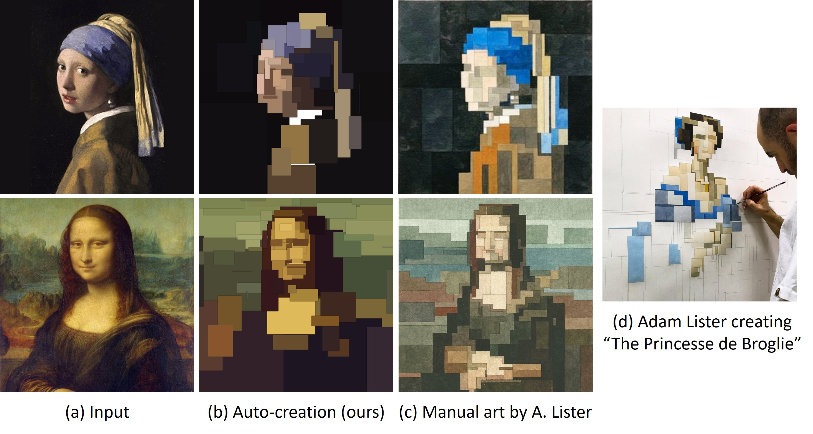
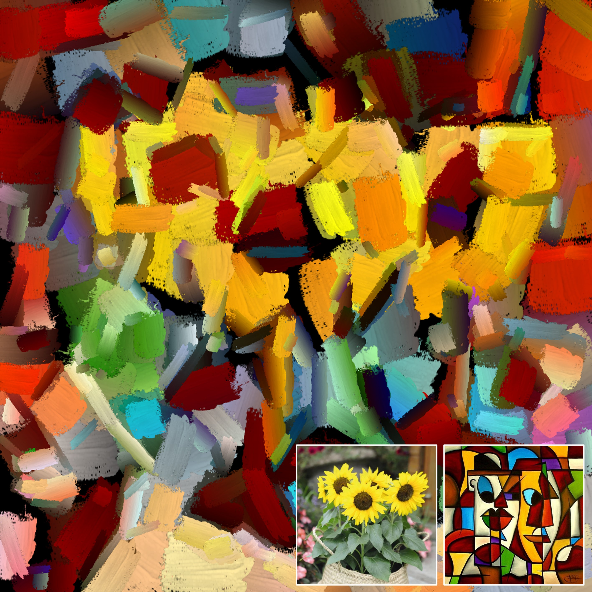

This paper proposes an image-to-painting
translation method that generates vivid and realistic painting artworks
with controllable styles. Different from previous image-to-image
translation methods that formulate the translation as pixel-wise
prediction, we deal with such an artistic creation process in a
vectorized environment and produce a sequence of physically meaningful
stroke parameters that can be further used for rendering. Since a
typical vector render is not differentiable, we design a novel neural
renderer which imitates the behavior of the vector renderer and then
frame the stroke prediction as a parameter searching process that
maximizes the similarity between the input and the rendering output. We
explored the zero-gradient problem on parameter searching and propose to
solve this problem from an optimal transportation perspective. We also
show that previous neural renderers have a parameter coupling problem
and we re-design the rendering network with a rasterization network and
a shading network that better handles the disentanglement of shape and
color. Experiments show that the paintings generated by our method have
a high degree of fidelity in both global appearance and local textures.
Our method can be also jointly optimized with neural style transfer that
further transfers visual style from other images.
One-minute Video Demo
Image-to-Painting Translation
In the following we show some stylized paintings
generated by our method. Our method can generate vivid paintings with a
high degree of realism and artistic sense in terms of both global visual
appearance and local texture fidelity. In (d), we also show some highly
abstract tape arts of cartoon characters generated by our method. Can
you guess who they are?.

Style Transfer
Since we frame our stroke prediction under a
parameter searching paradigm, our method naturally fits the neural style
transfer framework. In the following we show some of our painting
results as well as their style transfer results.




8-bit Graphic Artworks
Our method can also be used for creating 8-bit
graphic artworks. In the following we show the artworks created by our
method and those by a famous artist Adam Lister. Adam Lister is an
American-born artist and painter. In his pixelated paintings, he
explores iconic images burned into the psyche from exposure to art
history and pop culture. The manual artworks are from his personal gallery website.

High-resolution results
Since our painting results are generated with a
vector format. We can render them at any resolutions. Here we show two
example results rendered at a 1024x1024 pixel resolution.

Citation
@inproceedings{zou2020stylized,
title={Stylized Neural Painting},
author={Zhengxia Zou and Tianyang Shi and
Shuang Qiu and Yi Yuan and Zhenwei Shi},
year={2020},
eprint={2011.08114},
archivePrefix={arXiv},
primaryClass={cs.CV}
}